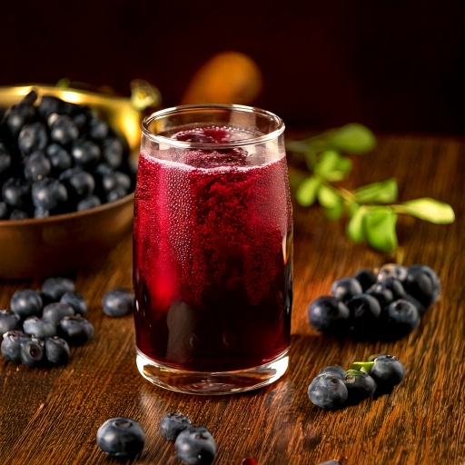
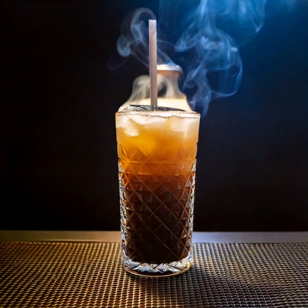
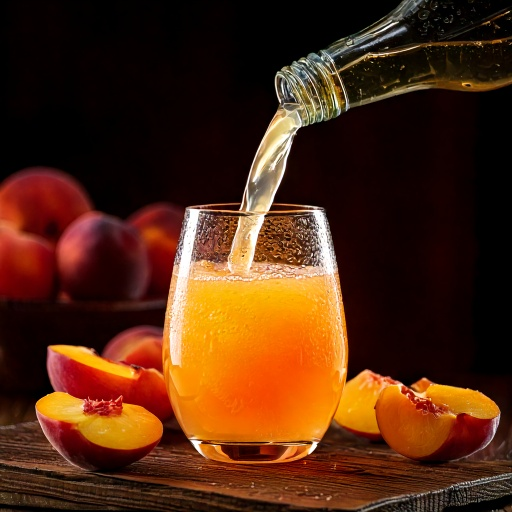
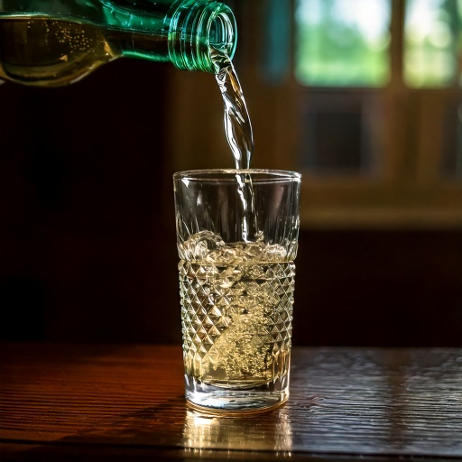

Montucky
Cocktails
Montana-Made Drinks Worth Talking About
Simple recipes built for people who appreciate the real thing. No fancy bar equipment required — just good spirit and Montana sense.
The Recipe Box
Drinks Worth Pouring
Every recipe here is built around the same principle as Montucky itself — keep it real, keep it Montana, and don't overthink it.
Showing all 6 recipes

The Montana Mule
A twist on the Moscow Mule with moonshine in place of vodka. The ginger bite and lime cut right through — sharp, cold, and unapologetically Montana.
Full recipe page →Ingredients
- 2 oz moonshine
- 4 oz ginger beer (not ginger ale)
- ½ oz fresh lime juice
- Ice
- Lime wedge to garnish
Steps
Fill a copper mug or glass with ice all the way to the top.
Pour 2 oz moonshine over the ice.
Add lime juice, then top with ginger beer. Stir gently once.
Garnish with a lime wedge. Drink immediately while ice-cold.

Campfire Sour
Honey, lemon, and a touch of smoked salt make this the kind of drink you want in your hand when the fire's going and the stars are out. Best served in a wide glass.
Ingredients
- 2 oz moonshine
- ¾ oz fresh lemon juice
- ½ oz honey syrup (1:1 honey and water)
- 1 egg white (optional, for foam)
- Pinch of smoked sea salt
- Ice
Steps
Combine moonshine, lemon juice, honey syrup, and egg white in a shaker. Shake without ice for 15 seconds (dry shake).
Add ice, shake hard for another 15 seconds until the tin is very cold.
Strain into a rocks glass over a large ice cube.
Pinch smoked salt over the top. Serve immediately.

Huckleberry Shine
Montana's state fruit meets moonshine. Use fresh or frozen huckleberries — or swap huckleberry jam if you can't find the real thing. Either way, it tastes exactly like the state smells in August.
Ingredients
- 2 oz moonshine
- 1 oz huckleberry juice or muddled huckleberries
- ½ oz simple syrup
- Club soda to top
- Ice
- Fresh huckleberries or lemon twist to garnish
Steps
If using fresh berries, muddle 8–10 in the bottom of a shaker. Add ice, moonshine, juice, and simple syrup.
Shake well for 10–15 seconds and strain into a tall glass over ice.
Top with a splash of club soda. Garnish and serve.

Midnight Smoke
Cold brew and moonshine. Dark, strong, and not for the faint. This is the drink you make when everyone else has gone to bed and you've still got things to think about.
Ingredients
- 1.5 oz moonshine
- 2 oz cold brew coffee concentrate
- ½ oz vanilla simple syrup
- Splash of heavy cream
- Ice
Steps
Fill a glass with ice. Pour moonshine, cold brew, and vanilla syrup over ice.
Stir to combine. Gently pour cream over the back of a spoon so it floats on top.
Do not stir after adding cream — drink through the layers.

Montana Peach Shine
Sweet, cold, and dangerous. Peach nectar and moonshine are made for each other — this one goes down fast, so pour responsibly.
Ingredients
- 2 oz moonshine
- 3 oz peach nectar or fresh peach juice
- ½ oz lemon juice
- Splash of lemon-lime soda
- Ice and peach slice to garnish
Steps
Add moonshine, peach nectar, and lemon juice to a shaker with ice. Shake well.
Strain into a glass over fresh ice.
Top with a splash of lemon-lime soda. Garnish with a peach slice.

The Straight Pour
Some things don't need improving. Good moonshine, a clean glass, and the good sense to leave it alone. This is the recipe for when you've earned it.
Ingredients
- 2 oz moonshine
- A clean glass
- Optional: one large ice cube
Steps
Pour 2 oz into the glass. Add ice if you like, or don't — both are valid.
Sit down somewhere that deserves it.
Drink slowly. You've earned it.